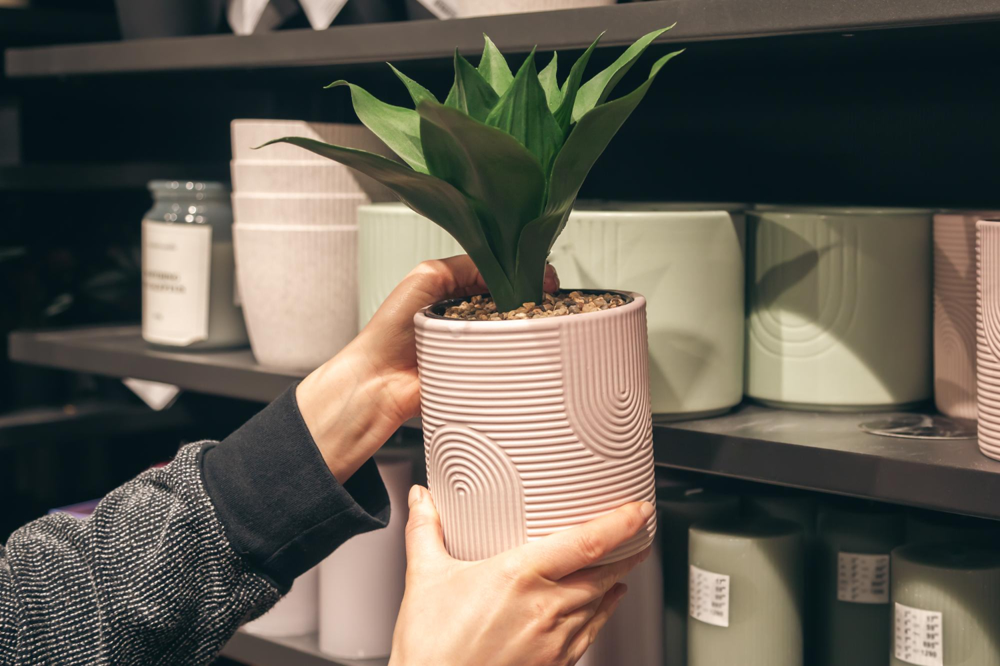

Green Groove Shop
Find simple gardening supplies to help you create and care for your own green space. From pots and planters to gardening tools, having the right supplies can make gardening easier and more enjoyable.
Whether you are caring for indoor plants or working in an outdoor garden, these are some useful items every gardener can have.
Gardening Essentials

Plant Pots
Choose pots that give your plants enough space to grow and have proper drainage.
Shop Now
Garden Tools
Basic tools such as hand trowels, gloves, and watering cans can make gardening easier.
Shop Now
Plant Care Supplies
Soil, plant food, and other care supplies can help plants get what they need to grow.
Shop NowVisit Our Store
Garden Groove Center
Need gardening supplies? Visit a local garden center to find plants, tools, pots, soil, and other gardening supplies.